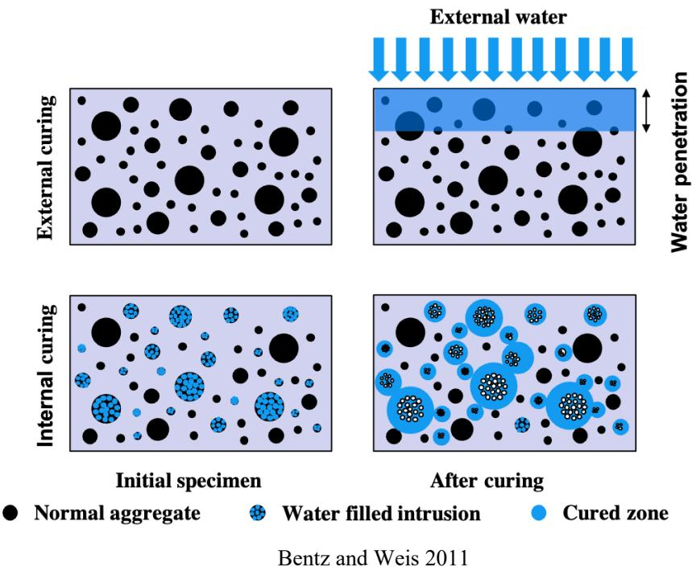
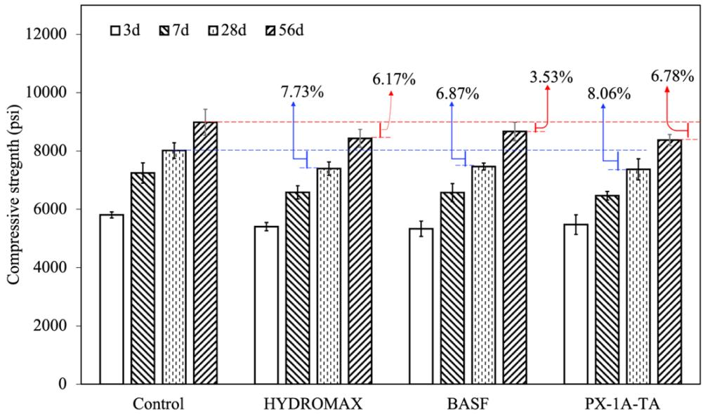
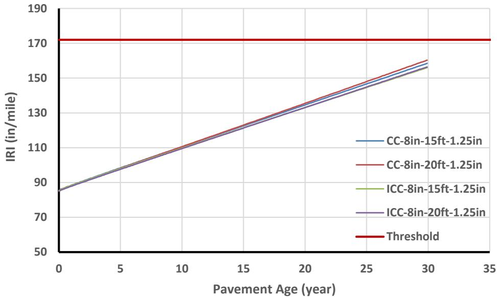
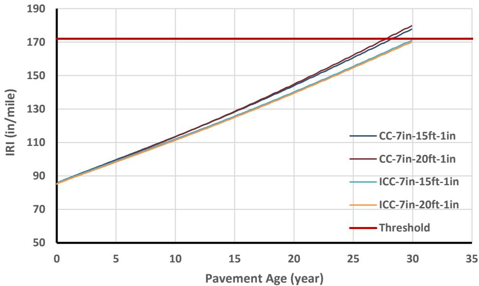

Internal Curing
Internal curing is a concrete technology that incorporates water-retaining materials, such as pre-saturated lightweight aggregates or superabsorbent polymers, directly into the mix to serve as internal moisture reservoirs. As cement hydration consumes available water and creates capillary tension, these embedded reservoirs gradually release stored moisture into the surrounding paste to maintain high internal relative humidity [4] [5] [6] [7] [9] [10]. This internal supply of water mitigates self-desiccation and autogenous shrinkage, thereby reducing the risk of early-age cracking without requiring external curing methods [4] [5] [6] [7] [9] [10]. By sustaining the hydration process and refining the microstructure, internal curing enhances the long-term durability, strength, and resistance to environmental stressors of the concrete [4] [5] [6] [7] [9] [10].
Sources (10)
Key findings
- Incorporating lightweight fine aggregates produced concrete that was stronger and lighter than conventional mixes while maintaining workability and delivering lower shrinkage-related stress and improved durability [9] [10].
- Internal curing using super-absorbent polymers increased the degree of hydration and significantly reduced evaporation, resulting in higher strength, delayed cracking, and greater residual strength compared to control mixes [3].
- Internal curing enabled designers to reduce slab thickness by one inch for equivalent performance or defer maintenance when keeping the same thickness, yielding a net present value that was lower than comparable conventional designs despite slightly higher material costs [7].
- Using saturated lightweight fine aggregate extended hydration for approximately one month, which translated into noticeably higher compressive strengths at 90 days and a modest reduction in the modulus of elasticity [5].
- Internal curing dampened moisture gradients and reduced temperature differentials, leading to markedly less warping and curling and permitting thinner sections or longer slabs with better ride quality [5].
- Embedding uniformly distributed super-absorbent polymers lowered early-age shrinkage and associated cracking while increasing bound-water content and accelerating hydration peaks, although it caused a modest loss in mechanical properties due to void creation after water desorption [4].
- Internal curing has moved from laboratory research to proven field applications, including full-scale bridge decks and pavement patches, with performance gains that translate into longer service life and the possibility of reduced external wet curing time [9].
Internal Curing Mechanisms and Material Practices
Internal curing is a technique that introduces small, water-filled reservoirs within the concrete matrix to supply moisture from within the mix during early hydration [4] [5] [6] [7] [9] [10]. These internal sources are typically realized by incorporating pre-saturated lightweight aggregates or superabsorbent polymers that retain water and release it gradually as the cement paste consumes moisture [4] [5] [6] [7] [9] [10]. By maintaining high internal relative humidity, this method mitigates self-desiccation and capillary tension, thereby reducing autogenous shrinkage and limiting early-age cracking [4] [5] [6] [7] [9] [10]. This approach allows concrete to achieve a higher degree of hydration and improved durability without increasing the external water-to-cement ratio [4] [5] [9].
The figure below illustrates the distinction between external and internal curing methods.

Comparison of external and internal curing mechanisms in concrete specimens. [4]The figure illustrates the difference between external curing, where water penetrates only a limited distance from the surface, and internal curing, which utilizes embedded reservoirs to supply moisture throughout the matrix.
Research problem — Low water-to-cementitious ratios and conventional external curing methods often fail to maintain sufficient internal moisture, leading to incomplete hydration, autogenous shrinkage, and early-age cracking that compromise the durability and service life of concrete structures [3] [7] [9]. The practical implementation of internal curing is hindered by logistical challenges such as the handling costs and potential performance reductions associated with presaturated lightweight aggregates, alongside a lack of standardized guidance for selecting and dosing superabsorbent polymers [8] [9] [10]. There is a critical need to understand how internal curing agents alter moisture gradients and shrinkage profiles to accurately predict pavement warping and ensure that the introduced materials reliably mitigate stress-induced cracking without introducing new performance inconsistencies [1] [6] [7].
The figure below illustrates the fundamental differences between conventional curing and internal curing methods.
 Comparison of external and internal curing mechanisms in concrete specimens. [9]
Comparison of external and internal curing mechanisms in concrete specimens. [9]
The figure illustrates the difference between conventional external curing, where water penetrates from the surface, and internal curing, which utilizes embedded reservoirs to maintain moisture within the specimen. In the ‘Internal curing’ row, blue spheres representing pre-saturated materials are shown releasing water into the surrounding matrix during hydration, creating a ‘Cured zone’.
State of the art — Internal curing is now a mature technology for low water-to-cement ratio concretes, primarily implemented by replacing fine aggregate with pre-saturated lightweight aggregates or incorporating superabsorbent polymers to act as internal water reservoirs [5] [9]. In North America, the prevailing practice relies on ASTM C1761 for lightweight aggregates and rigorous quality assurance protocols involving extended stockpile wetting to ensure adequate moisture content before batching [9]. While superabsorbent polymers are recognized as effective alternatives, particularly in European standards like EN 206, their adoption is guided by specific dosage calculations and particle size criteria to balance hydration benefits with mechanical performance [4].
The figure below illustrates the conceptual differences in volumetric components between a plain concrete mixture and one utilizing internal curing.
 Conceptual illustration of volumetric components in a plain and internally cured mixture [9]
Conceptual illustration of volumetric components in a plain and internally cured mixture [9]
The figure displays two stacked bar charts comparing the volumetric composition of conventional concrete against an internally cured mixture. Visually, the internal curing mix includes a distinct orange segment representing lightweight aggregate (LWA) at the top of the bar, which is absent in the conventional mix. This visual difference illustrates how internal curing incorporates water-filled inclusions to better disperse curing water throughout the depth of the concrete.
Findings from the reports
- Internal curing with superabsorbent polymers substantially enhanced the degree of hydration, particularly under low relative humidity conditions [3] [4].
- The incorporation of SAPs markedly reduced early-age shrinkage and associated cracking in concrete mixes [4] [9].
- The incorporation of superabsorbent polymers significantly reduced early-age shrinkage, with some high-performance mixes showing reductions of up to half compared to reference mixtures [4].
- Internal curing using lightweight fine aggregates produced concrete with higher compressive strength and modest weight savings compared to conventional mixes [10].
- Superabsorbent polymer internal curing delayed the drop in internal relative humidity, limited slump loss, and maintained electrical resistivity within acceptable limits despite a slight increase in permeability [4].
- Internal curing with lightweight fine aggregates mitigated high early-age shrinkage in LMC-VE overlays, suggesting its viability when combined with shrinkage-reducing chemicals [2].
Novelty & rigor — The research introduces the first full-scale U.S. application of an internal-curing additive in pervious concrete, eliminating the need for traditional plastic curing methods [3]. A systematic framework for selecting and dosing super-absorbent polymers is established through rigorous screening protocols that evaluate absorption kinetics and desorption behavior in cement pore solutions [4]. The field-scale demonstration of internal curing using lightweight fine aggregates in bridge superstructures represents a novel structural application that simultaneously reduces beam weight and enhances compressive strength [10].
The following figure illustrates the resulting compressive strength development of the concrete.

Compressive strength development of concrete [4]The data demonstrates that incorporating these additives results in higher compressive strength compared to the control mixture, supporting the claim that this method enhances concrete properties.
Reported values
| Parameter | Value | Context | Source |
|---|---|---|---|
| degree of hydration | 16% | sample cured at 50% relative humidity | [3] |
| shrinkage reduction duration | 7 days | concrete mixtures containing SAPs | [4] |
| water absorption observation period | 30 minutes | SAPs in slump loss tests | [4] |
| single-operator coefficient of variation | 5.83% | SAP absorption testing (internal-curing material performance) | [9] |
| compressive strength | 6,870 psi | 28-day average concrete with lightweight fine aggregates for internal curing | [10] |
| compressive strength requirement | 4,000 psi | required strength for concrete with lightweight fine aggregates for internal curing | [10] |
| weight reduction | 5% | beam fabricated using lightweight aggregate for internal curing compared to conventional concrete | [10] |
Across the reviewed reports, internal curing mechanisms utilizing lightweight aggregates or superabsorbent polymers consistently enhance the degree of cement hydration and mitigate early-age shrinkage compared to conventional mixes. While these internal curing agents improve durability by reducing cracking and stress, they introduce a modest trade-off in mechanical properties, such as an approximately eight percent reduction in compressive strength or the need for specialized handling due to weight constraints. The practical implementation of these materials requires precise moisture management protocols, including specific pre-wetting durations and quality control measures, to ensure the internal water supply effectively offsets evaporation without compromising workability. [2] [3] [4] [9] [10]
Implications — Designers should specify internal curing agents, such as lightweight aggregates or superabsorbent polymers, to mitigate early-age shrinkage and cracking while maintaining low water-to-cement ratios for improved durability [2] [4] [9]. Mix proportions must be carefully tailored to balance the moisture benefits of internal curing against potential reductions in strength or increases in permeability caused by induced voids [4]. Construction specifications should integrate internal curing with conventional external curing methods to enhance long-term performance and potentially reduce the duration of required wet-curing periods [3] [9] [10].
The figure below illustrates how internal curing influences drying shrinkage and autogenous deformation relative to concrete age.
 Drying shrinkage and autogenous versus concrete age in conventional concrete (left) and high-performance concrete (right) after internal curing [4]
Drying shrinkage and autogenous versus concrete age in conventional concrete (left) and high-performance concrete (right) after internal curing [4]
The figure displays two graphs plotting shrinkage against concrete age, comparing the cumulative effects of drying shrinkage and autogenous shrinkage. In conventional concrete, total shrinkage is primarily driven by drying shrinkage after the start of drying, whereas high-performance concrete exhibits a significant contribution from autogenous shrinkage even before external moisture loss begins.
Limitations — The economic viability of internal curing is constrained by high initial construction costs and a lack of direct structural benefits, forcing reliance on projected maintenance savings for justification [2] [5]. Practical implementation faces significant logistical barriers regarding the large-scale procurement, storage, and pre-conditioning of lightweight aggregates, alongside equipment limitations that restrict handling methods [5] [10]. The use of superabsorbent polymers introduces unpredictability in mix proportioning due to uncontrolled water release during mixing and results in consistent compressive strength reductions that vary with particle size [4]. Internal curing should be regarded as a supplementary enhancement rather than a replacement for conventional practices, as external wet-curing may still be necessary and safety protocols remain underdeveloped [9].
Evidence: 10 reports (5 primary)
Performance Evaluation and Economic Analysis
Research problem — There is a need to evaluate how internal curing techniques mitigate early-age cracking, high permeability, and warping in concrete pavements caused by moisture loss and temperature gradients [5]. Research must address the economic implications of these durability improvements, specifically regarding reduced maintenance costs for thin overlays resulting from enhanced service life and ride quality [5].
The figure below illustrates the concrete slab warping and curling that internal curing aims to mitigate.
 Concrete slab warping and curling [5]
Concrete slab warping and curling [5]
The figure illustrates two distinct modes of concrete slab deformation: upward curling, where the surface is cooler and drier than the base, and downward curling, where the surface is at a higher temperature and moisture content. Field investigations show that concrete slabs do not remain flat after construction due to curling and warping caused by temperature and moisture gradients.
State of the art — Current practice typically employs pre-saturated lightweight fine aggregate to replace approximately one-fifth to one-quarter of normal-weight fine aggregate, establishing internal water reservoirs that maintain early-age concrete moisture above 90% [7]. Performance evaluations indicate that this method significantly reduces shrinkage, warping, and freeze-thaw damage while lowering the modulus of elasticity, enabling designers to reduce slab thickness or increase joint spacing without compromising structural integrity [7]. Economic analyses demonstrate that the modest material cost premium is offset by lifecycle savings from reduced maintenance and improved net present value, supporting the widespread adoption of internal curing for durability and economic efficiency [7].
Findings from the reports
- Enabled designers to reduce pavement slab thickness by one inch while maintaining equivalent long-term distress performance compared to conventionally cured slabs [7].
- Mitigated the adverse effects of larger joint spacings by lowering the coefficient of thermal expansion, modulus of elasticity, and ultimate shrinkage while increasing strength [7].
- Extended concrete hydration for approximately one month after placement, resulting in significantly higher compressive strengths at 90 days compared to control mixes [5].
- Raised slab temperatures for up to three weeks post-placement and dampened moisture gradients, which limited warping and reduced measured slab deflection [5].
- Increased surface resistivity and revealed a lower proportion of unreacted cement via SEM analysis, indicating improved durability and deeper hydration [5].
- Produced no significant difference in structural performance under low traffic loads while offering long-term financial benefits through reduced rehabilitation frequency [5].
Novelty & rigor — The research introduces a novel integrated framework that couples full-scale field monitoring with life-cycle cost analysis to demonstrate how internal curing extends pavement rehabilitation intervals and yields net economic savings despite higher initial material costs [5] [7]. The methodology is distinct for its use of pre-saturated lightweight fine aggregate as an internal water reservoir, which reduces thermal gradients and shrinkage to permit thinner slab designs or wider joint spacing without compromising structural performance [5] [7]. Reproducibility is ensured through detailed protocols for aggregate conditioning, specific mix proportioning with air-entrainment and water reducers, embedded sensor monitoring of moisture and temperature, and standardized pavement mechanistic-empirical modeling [5] [7].
The following figure illustrates an 8-inch-thick slab comparing conventionally and internally cured pavement to visualize these structural applications.

Pavement roughness progression over time for conventionally and internally cured concrete slabs. [7]The figure plots the International Roughness Index (IRI) against pavement age to compare the long-term performance of different slab configurations.
Reported values
| Parameter | Value | Context | Source |
|---|---|---|---|
| compressive strength test age | 90 days | mixture designs | [5] |
| initial cost increase | 2.3% | Washington County | [5] |
| initial cost increase | 3.1% | Winneshiek County | [5] |
| maximum movement | 0.9 mm | Washington County during Winter in the morning, IC section | [5] |
| maximum movement | 2.2 mm | Washington County during Winter in the morning, CC section | [5] |
| maximum movement (warping deflection) | 0.9 mm | Washington County, Winter morning, IC section | [5] |
| maximum movement (warping deflection) | 2.2 mm | Washington County, Winter morning, CC section | [5] |
| initial construction cost increase | 3.2% | IC pavements in Iowa compared to CC pavements with the same thickness | [7] |
| initial construction cost reduction | 3.1% | by decreasing the thickness of the pavement when utilizing IC concrete | [7] |
| NPV difference | 0.84% | IC pavement compared to CC pavement for different scenarios | [7] |
| NPV difference | 3.3% | IC pavement compared to CC pavement for different scenarios | [7] |
| pavement thickness | 10 in. | IC concrete pavement compared to conventionally cured concrete | [7] |
| pavement thickness | 8 in. | IC concrete pavement compared to conventionally cured concrete | [7] |
| thickness reduction | 1 in. | using IC concrete compared to conventionally cured concrete | [7] |
Across the reviewed reports, internal curing using lightweight fine aggregate consistently enhances mechanical properties such as compressive strength and durability while reducing shrinkage and modulus of elasticity compared to conventional concrete. Performance evaluations indicate that these hardened-property improvements allow for reduced slab thickness or extended joint spacing without compromising long-term distress metrics, with field studies confirming lower warping and comparable structural performance under traffic loads. Economic analyses converge on the finding that while initial construction costs increase by approximately two to three percent due to material expenses, life-cycle cost assessments demonstrate net financial savings over the pavement’s service life through reduced maintenance needs and the cost offsets from thinner section designs. [5] [7]
The figure below illustrates a typical cross-section of this improved pavement design.

Comparison of International Roughness Index (IRI) over pavement age for conventionally and internally cured concrete slabs. [7]The legend distinguishes between conventionally cured (CC) and internally cured (ICC) concrete, with variations in joint spacing of 15 ft and 20 ft. Using IC concrete leads to higher overall performance and a decreasing ultimate IRI value compared to conventional methods.
Implications — Designers can specify thinner pavement sections or wider joint spacing without compromising structural integrity, as internal curing mitigates shrinkage and thermal stresses while maintaining required strength levels [5] [7]. Although initial material costs may rise slightly due to the handling of pre-saturated lightweight aggregates, the resulting reduction in early-age distresses and extended rehabilitation intervals generate net life-cycle economic savings [5] [7]. Widespread adoption requires addressing logistical challenges related to the soaking, transport, and storage of sufficient lightweight aggregate volumes for large-scale projects [5].
The following figure illustrates how these benefits translate into improved ride quality by showing the International Roughness Index of internally cured pavements over their design life.
 IRI of internally cured pavements over design life [7]
IRI of internally cured pavements over design life [7]
The figure plots the International Roughness Index (IRI) against pavement age, showing a linear increase in roughness for several different concrete mix configurations. A horizontal red line indicates a performance threshold that the pavements approach as they age. The results demonstrate that using IC concrete slightly compensates for the effect of increasing joint spacing from 15 to 20 ft on the ultimate IRI value.
Limitations — The economic advantage is modest and deliberately excludes additional benefits such as reduced shrinkage, freeze-thaw resistance, impermeability, or thermal gradient mitigation [7]. The analysis conservatively assumes identical maintenance costs for both mixes despite literature suggesting lower upkeep for internally cured pavement [7]. Variations in construction cost, discount rate, and maintenance assumptions can noticeably affect the reported savings [7].
Evidence: 2 reports (2 primary)
Related concepts
In this hierarchy
- Parent: Concrete Curing
- Sibling: Curing Compounds
- Sibling: VDOT Accelerated Curing Regime
Related by shared evidence
- Cement Hydration — shares 9 reports
- Lightweight Aggregate — shares 9 reports
- Concrete Curing — shares 8 reports
- Drying Shrinkage — shares 7 reports
- Aggregates — shares 5 reports
- Air Entraining Agent — shares 5 reports
- Curling and Warping — shares 5 reports
- Early-Age Behavior, Curing & Distress — shares 5 reports
Similar topics
- Lightweight Aggregate
- Concrete Curing
- Aggregates
- Degree of Hydration
- Drying Shrinkage
- Plastic Shrinkage Cracking
- Curing Compounds
- High-Performance Concrete
References
- J. Grove, F. Bektas, and H. Gieselman, "Southeast Michigan Local Road Concrete Pavement Durability Study," National Concrete Pavement Technology Center, Ames, IA, 2006. [Online]. Available: https://www.cptechcenter.org/wp-content/uploads/2018/03/mi_pavement_durability.pdf
- K. Wang, B. M. Shankaramurthy, A. Anand, Y. Sargam, K. Freeseman, and B. Phares, "Performance Evaluation of Very Early Strength Latex-Modified Concrete (LMC-VE) Overlay," Institute for Transportation, Iowa State University, Ames, IA, Rep. TR-771, 2024. [Online]. Available: https://bec.iastate.edu/wp-content/uploads/2024/10/performance_evaluation_of_LMC-VE_overlay_w_cvr.pdf
- T. Cackler, J. Alleman, J. Kevern, and J. Sikkema, "Technology Demonstrations Project: Environmental Impact Benefits with "TX Active" Concrete Pavement (Missouri DOT Two-Lift Demonstration)," National Concrete Pavement Technology Center, Ames, IA, 2012. [Online]. Available: https://www.cptechcenter.org/research/completed/technology-demonstrations-project-environmental-impact-benefits-with-tx-active-concrete-pavement-in-missouri-dot-two-lift-highway-construction-demonstration/
- B. Zhou, P. Taylor, and K. Wang, "Superabsorbent Polymer in Concrete to Improve Durability," National Concrete Pavement Technology Center, Iowa State University, Ames, IA, Rep. TR-793, 2025. [Online]. Available: https://www.intrans.iastate.edu/wp-content/uploads/2025/04/superabsorbent_polymer_in_concrete_w_cvr.pdf
- A. Daghighi, P. Taylor, H. Ceylan, and Y. Zhang, "Impacts of Internally Cured Concrete Paving on Contraction Joint Spacing Phase II," National Concrete Pavement Technology Center, Iowa State University, Ames, IA, Rep. TR-746, 2021. [Online]. Available: https://www.cptechcenter.org/wp-content/uploads/2021/05/IC_concrete_paving_impacts_phase_II_field_impl_w_cvr.pdf
- B. Shafei, P. Taylor, B. Phares, and M. Kazemian, "Fiber-Reinforced Concrete for Bridge Decks," Bridge Engineering Center, Iowa State University, Ames, IA, Rep. TR-767, 2021. [Online]. Available: https://www.intrans.iastate.edu/wp-content/uploads/2021/12/fiber-reinforced_concrete_in_bridge_decks_w_cvr.pdf
- P. Vosoughi, S. Tritsch, H. Ceylan, and P. Taylor, "Lifecycle Cost Analysis of Internally Cured Jointed Plain Concrete Pavement," National Concrete Pavement Technology Center, Ames, IA, Rep. TR-676, 2017. [Online]. Available: https://publications.iowa.gov/27038/
- K. Tian, D. King, B. Yang, S. Kim, A. Alhasan, and H. Ceylan, "Impact of Curling and Warping on Concrete Pavement: Phase II," Program for Sustainable Pavement Engineering and Research (PROSPER), Iowa State University, Ames, IA, Rep. TR-749, 2023. [Online]. Available: https://intrans.iastate.edu/app/uploads/2023/06/Impact_of_Curling_and_Warping_Phase_II_w_cvr.pdf
- W. J. Weiss and L. Montanari, "Guide Specification for Internally Curing Concrete," National Concrete Pavement Technology Center, Ames, IA, Rep. TPF-5(286), 2017. [Online]. Available: https://www.intrans.iastate.edu/wp-content/uploads/2018/09/IC_guide_spec_w_cvr.pdf
- B. Phares, T. Hosteng, L. Greimann, and A. Pakhale, "Evaluation of the Buchanan County IBRD Bridge on Victor Avenue over Prairie Creek," Bridge Engineering Center, Ames, IA, Rep. InTrans Project 12-427, 2017. [Online]. Available: https://www.intrans.iastate.edu/wp-content/uploads/2018/03/Victor_Ave_over_Prairie_Creek_IBRD_bridge_eval_w_cvr.pdf
Feedback on this page